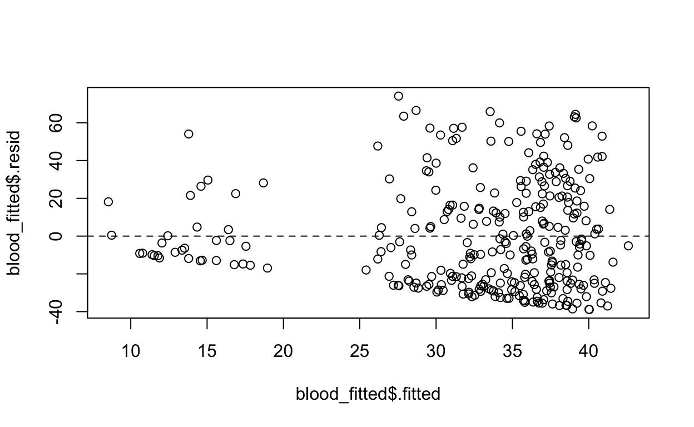
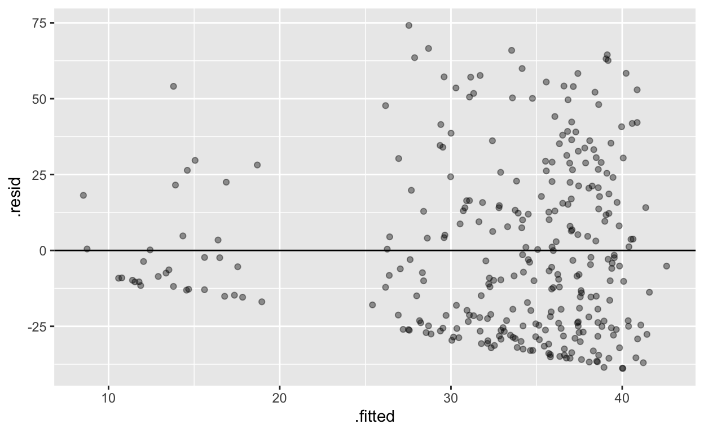
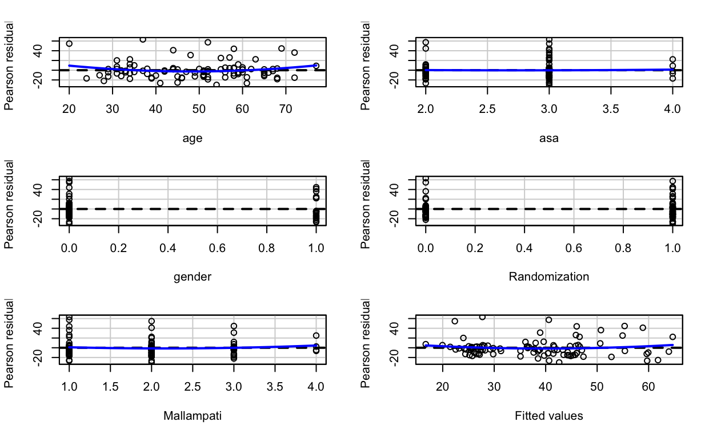
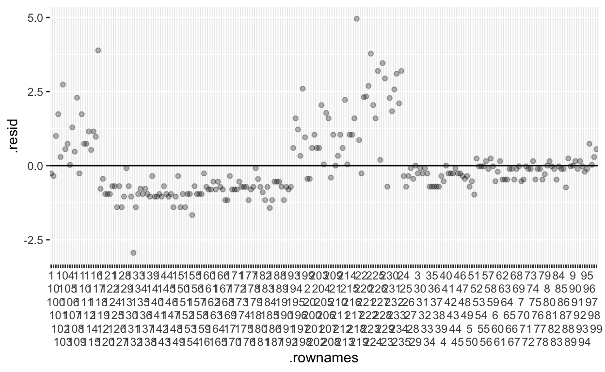
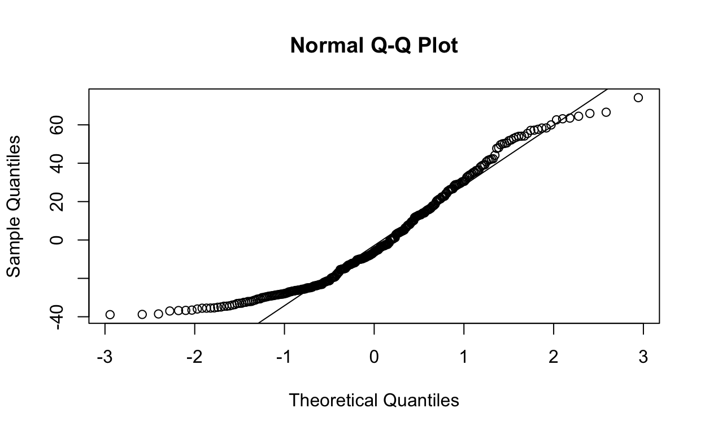
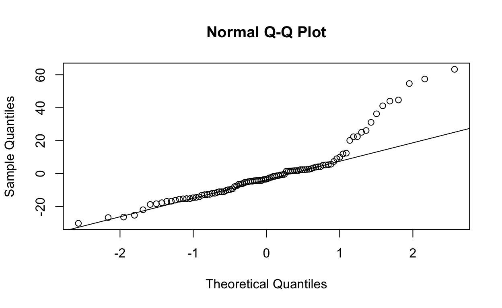
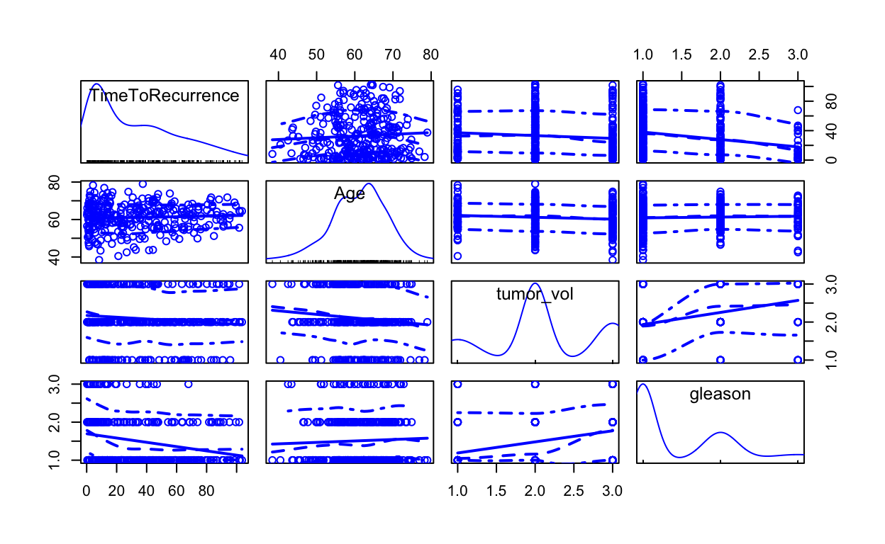

First, let’s introduce our three data sets for today
The supraclavicular data set contains data on 103 subjects undergoing upper extremity procedures and receiving supraclavicular anesthesia. They were randomly assigned to a combination of ropivacaine and mepivacaine or sequential mepivacaine followed by ropivacaine. The primary outcome is time to onset of 4-nerve sensory block.
The licorice gargle data set contains data on 236 subjects undergoing thoracic surgery with intubation. They were randomly assigned to a gargle of sugar water vs. licorice before anesthesia. The primary outcome is throat pain at 30 minutest post procedure in the PACU.
The blood storage data set contains data on 316 subjects after radical prostatectomy who received blood transfusion within 30 days of their surgery and had available PSA follow-up data. The main exposure of interest was the RBC storage duration time. It is suspected that transfusion of older blood causes immunosuppression and could increase cancer recurrence.
The laryngoscope data set contains data on 99 obese subjects who required orotracheal intubation for elective surgery. The main exposure of interest was randomization to a standard macintosh laryngoscope vs. the Pentax AWS video larygnoscope. It was hyopthesized that the video scope would allow easier and faster intubation. The primary outcome is time to intubation, success is considered <100 seconds, and multiple attempts could be made. Glottic view (ease) was rated from 0 = easy to 100 = extremely difficult. Other outcomes include blood staining and postop sore throat. Covariates include age, gender, asa status, BMI, Mallampati. The codebook can be found at: https://github.com/higgi13425/medicaldata/blob/master/codebooks/laryngoscope_code.pdf
The opt data set contains data on 823 subjects at 4 centers in a RCT of periodontal treatment intervention during pregnancy to reduce the rate of preterm birth and low birth weight. The main exposure of interest was the the periodontal intervention (Group). The primary outcome is gestational age (GA.at.outcome) in days at birth. Secondary outcomes include birthweight (g) and Apgar scores at 1 and 5 minutes. A number of other bacteria dn biomarkers were recorded across multiple visits. Details at https://github.com/higgi13425/medicaldata/blob/master/description_docs/opt_desc.pdf and the codebook can be found at https://github.com/higgi13425/medicaldata/blob/master/codebooks/opt_code.pdf.
Let’s work on how to create linear regression models and how to present the results with 3 packages
The simplest predictive model is simple imputation - predicting all of the values with the mean value.
This is also known as the NULL model.
In the blood dataset, the mean time to recurrence is 32.917873.
So let’s build a simple null model.
The two main arguments for the lm() function are the formula and the data.
The formula follows the format dependent_variable ~ independent_variables
Note that the data argument is not the first argument, so it does not automatically play well with pipes.
You can pipe in data if you make the data argument explicit, and set it to
data = .
Let’s look at a simple example
blood %>%
lm(TimeToRecurrence ~ NULL, data = .) ##
## Call:
## lm(formula = TimeToRecurrence ~ NULL, data = .)
##
## Coefficients:
## (Intercept)
## 32.92We can also output the results as a nice tibble, with the tidy() function from the {broom} package.
blood %>%
lm(TimeToRecurrence ~ NULL, data = .) %>%
broom::tidy()This model has only one term, the intercept. It estimates every value of time to recurrence with the mean, 32.91. This is a pretty poor model, but is a place to start.
Let’s look at how good this model is, using another function from the {broom} package. We can glance() our model, again output into a nice tibble.
blood %>%
lm(TimeToRecurrence ~ NULL, data = .) %>%
broom::glance()The r.squared and adj.r.squared are both 0, so we are capturing none of the variation in the data with this null model. The log likelihood is -1502, and the AIC 3009, and BID 3016 (these are both high because this is a crummy model).
AIC is Akaike’s Information Criterion, and estimates the out-of-sample prediction error and relative quality of a statistical model. A higher number indicates more information lost. Lower numbers for AIC = higher quality models.
BIC is the Bayesian Information Criterion, which like AIC, penalizes models for the number of parameters to reduce overfitting. BIC also considers the number of observations in the data, which AIC does not. Lower values are better, and BIC is generally always higher than AIC, but absolute values do not matter, only relative values when comparing models on the same dataset for the same outcome.
Let’s add some predictors: Age, tumor_vol, and gleason, and see if we do better.
blood %>%
lm(TimeToRecurrence ~ Age + tumor_vol + gleason, data = .) %>%
glance()We are explaining some (about 5.2%) of the variation with this predictor, and the log likelihood (-1458) got closer to zero, and the AIC (2931) and BIC (2957) went down, showing that this is a better model than the NULL model.
Pipe the licorice data into an lm() function, with a formula argument and the data = . argument.
Use the outcome of pacu30min_throatPain. Use predictors like preOp_pain, intraOp_surgerySize, treat, gender, and smoking.
Then pipe the result into the function tidy() to see the model, and (separately) into the function glance() to evaluate the model quality.
licorice licorice %>%
lm(pacu30min_throatPain ~ preOp_pain + treat + gender + smoking + intraOp_surgerySize, data = .)licorice %>%
lm(pacu30min_throatPain ~ preOp_pain + treat + gender + smoking + intraOp_surgerySize, data = .) %>%
tidy()Use the supraclavicular dataset to build a model with the outcome onset_sensory, with indep_vars including age, bmi, gender, and group. Output the regression table with tidy() and the model measures with glance()
Experiment with removing indep_vars that are not significant, and see what happens to AIC and BIC.
suprasupra %>%
lm(onset_sensory ~ age + bmi + gender + group, data = .)supra %>%
lm(onset_sensory ~ age + bmi + gender + group, data = .) %>% tidy()
supra %>%
lm(onset_sensory ~ age + bmi + gender + group, data = .) %>% glance()Let’s take your model above, and rather than pipe it into tidy() or glance(), pipe it into the tbl_regression() function from the {gtsummary} package.
supra %>%
lm(onset_sensory ~ age + bmi + gender + group, data = .) supra %>%
lm(onset_sensory ~ age + bmi + gender + group, data = .) %>% tbl_regression() This produces a nice looking table, suitable for Rmarkdown documents, with output to Word or Powerpoint. You can even convert this to other formats:
Key assumptions of linear regression
Is the variance of the residuals homogeneous? There should be no patter to the residuals plotted vs. the fitted values
Let’s start with a simple model and check its validity. We will pipe the model into the {broom} package function augment() to add residuals and fitted values to the dataframe.
blood %>%
lm(TimeToRecurrence ~ Age + tumor_vol + gleason, data = .) %>% augment() ->
blood_fitted
blood_fittedWe can do a simple base R plot of the fitted values (.fitted) against the residuals (.resid)
plot(blood_fitted$.resid ~ blood_fitted$.fitted)
abline(h=0, lty =2)
There is a bit of a wider spread of residuals at higher values of Time to Recurrence, which is to be expected. Not a big problem here.
This can also be done with ggplot. See the example below.
blood_fitted %>%
ggplot() +
aes(x = .fitted, y = .resid) +
geom_point(alpha = 0.4) +
geom_hline(yintercept = 0)
Using the model blow, check for heteroscedasticity. Don’t forget to augment() and save the values as licorice_fitted! Use the hints if needed.
licorice %>%
lm(pacu30min_throatPain ~ preOp_pain + treat + gender + smoking + intraOp_surgerySize, data = .)licorice %>%
lm(pacu30min_throatPain ~ preOp_pain + treat + gender + smoking + intraOp_surgerySize, data = .) %>%
augment() ->
licorice_fittedlicorice %>%
lm(pacu30min_throatPain ~ preOp_pain + treat + gender + smoking + intraOp_surgerySize, data = .) %>%
augment() ->
licorice_fitted
plot(licorice_fitted$.resid ~ licorice_fitted$.fitted)
abline(h=0, lty =2)Using the model blow, check for heteroscedasticity. Use the ggplot approach to plotting. Don’t forget to augment and save the values as laryngo_fitted!
laryngo %>%
lm(total_intubation_time ~ age + asa + gender + Randomization + Mallampati, data = .)laryngo %>%
lm(total_intubation_time ~ age + asa + gender + Randomization + Mallampati, data = .) %>%
augment() ->
laryngo_fittedlaryngo %>%
lm(total_intubation_time ~ age + asa + gender + Randomization + Mallampati, data = .) %>%
augment() ->
laryngo_fitted
laryngo_fitted %>%
ggplot() +
aes(x = .fitted, y = .resid) +
geom_point(alpha = 0.4) +
geom_hline(yintercept = 0)There are built in functions in the {car} package to make this easier. Just use your model as the argument for the residualPlots() function.
You are looking for a smooth relationship, and a horizontal fitted line. The Console pane will include tests for curvature.
model_l <- laryngo %>%
lm(total_intubation_time ~ age + asa + gender + Randomization + Mallampati, data = .)
residualPlots(model_l)
## Test stat Pr(>|Test stat|)
## age 1.4628 0.146959
## asa 0.1873 0.851863
## gender -2.9238 0.004363 **
## Randomization 0.3775 0.706648
## Mallampati 0.7721 0.442071
## Tukey test 1.0376 0.299447
## ---
## Signif. codes:
## 0 '***' 0.001 '**' 0.01 '*' 0.05 '.' 0.1 ' ' 1It looks like the gender variable may be worth looking at for non-linearity in the relationship to intubation time.
Now try this with a licorice model
model_lic <- licorice %>%
lm(pacu30min_throatPain ~ preOp_pain + treat + gender + smoking + intraOp_surgerySize, data = .)model_lic <- licorice %>%
lm(pacu30min_throatPain ~ preOp_pain + treat + gender + smoking + intraOp_surgerySize, data = .)
residualPlots(model_lic)We can simply plot the residuals vs. the row number (or studyid) to look for trends over time or clustering of residuals, to evaluate whether the study sample or procedures changed over time. Let’s start with the licorice fitted model.
licorice %>%
lm(pacu30min_throatPain ~ preOp_pain + treat + gender + smoking + intraOp_surgerySize, data = .) %>%
augment() ->
licorice_fitted
licorice_fitted %>%
ggplot() +
aes(x = .rownames, y = .resid) +
geom_point(alpha = 0.3) +
geom_hline(yintercept = 0) +
scale_x_discrete(guide = guide_axis(n.dodge = 6))
Something funky went on in two periods of the study, with high residuals for a while.
Check Independence with this blood model
blood %>%
lm(TimeToRecurrence ~ Age + tumor_vol + gleason, data = .) %>% augment() ->
blood_fittedblood %>%
lm(TimeToRecurrence ~ Age + tumor_vol + gleason, data = .) %>% augment() ->
blood_fitted
blood_fitted %>%
ggplot() +
aes(x = .rownames, y = .resid) +
geom_point(alpha = 0.3) +
geom_hline(yintercept = 0) +
scale_x_discrete(guide = guide_axis(n.dodge = 6))Check Independence with this layngoscope model
laryngo %>%
lm(total_intubation_time ~ age + asa + gender + Randomization + Mallampati, data = .) %>%
augment() ->
laryngo_fittedlaryngo %>%
lm(total_intubation_time ~ age + asa + gender + Randomization + Mallampati, data = .) %>%
augment() ->
laryngo_fitted
laryngo_fitted %>%
ggplot() +
aes(x = .rownames, y = .resid) +
geom_point(alpha = 0.3) +
geom_hline(yintercept = 0) +
scale_x_discrete(guide = guide_axis(n.dodge = 6))Normality is not required to get unbiased estimates of your regression coefficients.
It is not required that your predictors are normally distributed.
And if we have a large sample size, normality does not matter, as the Central Limit Theory will cover us.
But with moderate sample sizes, your residuals need to be normally distributed to get valid p values for t-tests for predictors and the F-test for the entire model.
We can check this with a QQ normality plot of the residuals. Try this with our blood_fitted model. The points should be on or near the line throughout.
qqnorm(blood_fitted$.resid)
qqline(blood_fitted$.resid) This is pretty good, but goes off the rails a bit at the lower extreme.
qqnorm(licorice_fitted$.resid)
qqline(licorice_fitted$.resid)laryngo %>%
lm(total_intubation_time ~ age + asa + gender + Randomization + Mallampati, data = .) %>%
augment() ->
laryngo_fittedlaryngo %>%
lm(total_intubation_time ~ age + asa + gender + Randomization + Mallampati, data = .) %>%
augment() ->
laryngo_fitted
qqnorm(laryngo_fitted$.resid)
qqline(laryngo_fitted$.resid)
In linear regression, an outlier is an observation with large residual. In other words, it is an observation whose dependent-variable value is unusual given its values on the predictor variables. An outlier may indicate a sample peculiarity or may indicate a data entry error or other problem.
Leverage: An observation with an extreme value on a predictor variable is called a point with high leverage. Leverage is a measure of how far an observation deviates from the mean of that variable. These leverage points can have an effect on the estimate of regression coefficients.
An observation is said to be influential if removing the observation substantially changes the estimate of coefficients. Influence can be thought of as the product of leverage and outlierness.
You can find potential problem observations by plotting all of your model indep_vars with the dep_var in a scatterplot matrix.
For example, for our blood_fitted model, we used three independent variables, Age + tumor_vol + gleason score, to predict the dep_var TimeToRecurrence.
We can make a Scatterplot Matrix with a function from the {car} package. We are looking for points in the scatterplots that are Outliers.
scatterplotMatrix(~ TimeToRecurrence + Age + tumor_vol + gleason, data = blood) Not bad.
Use the laryngoscope model, which used total_intubation_time, age, asa, gender, Randomization, and Mallampati variables.
scatterplotMatrix( data = laryngo)scatterplotMatrix(~ total_intubation_time + age + asa + gender + Randomization + Mallampati, data = laryngo)Ther may be some Outliers in the Age vs total_intubation_time plot.
summ_tbl_supra
regress_tbl_supra
merged_tbl_bloodsumm_tbl_supra <- supra %>%
select(group, gender, bmi, age)
regress_tbl_supra <- lm(onset_motor ~ group + gender + bmi + age +fentanyl, data = supra)
merged_tbl_blood <- tbl_merge(list(summ_tbl_supra, regress_tbl_supra))summ_tbl_supra <- supra %>%
select(group, gender, bmi, age) %>%
tbl_summary() %>%
add_n()
summ_tbl_supra
regress_tbl_supra <- lm(onset_motor ~ group + gender + bmi + age +fentanyl, data = supra) %>%
tbl_regression()
regress_tbl_supra
merged_tbl_blood <- tbl_merge(list(summ_tbl_supra, regress_tbl_supra),
tab_spanner = c("**Summary Statistics**",
"**Onset Motor Outcome**"))
merged_tbl_blood